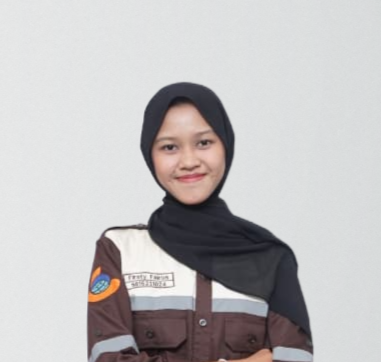

KERJA PRAKTEK TEKNIK GEOMATIKA ITS · 2026
Pertamina Hulu Rokan · Wilayah Kerja Zona 1
Studi ini memetakan seberapa dekat sumur, pipa, dan manifold berdiri dari sungai, permukiman, dan hutan, kemudian mengklasifikasikan setiap titik ke dalam tingkat risiko lingkungan secara spasial dan interaktif.
WGS 1984 (EPSG:4326) · UTM Zona 47N
Peta Hasil Analisis
0
Titik Sumur
0
Manifold
0
Kawasan Sensitif Dianalisis
Distribusi Tingkat Risiko
01 — Latar Belakang
Kegiatan eksplorasi dan produksi minyak dan gas melibatkan jaringan infrastruktur luas — sumur, pipa penyalur, dan manifold — yang tersebar di berbagai kondisi lingkungan. Sebagian berdiri berdekatan dengan kawasan sensitif seperti sungai, permukiman, dan hutan, membawa potensi risiko: pencemaran badan air, gangguan keselamatan warga, hingga kerusakan ekosistem yang sulit dipulihkan.
Studi ini memetakan tingkat risiko tersebut secara spasial menggunakan analisis buffer dan overlay pada wilayah kerja Rantau & Kuala Simpang Barat, Aceh Tamiang, bagian dari Wilayah Kerja Zona 1 Pertamina Hulu Rokan — dan hasilnya menunjukkan bahwa mayoritas infrastruktur yang dipetakan berada dalam radius kritis kawasan sensitif.
Lokasi Studi
Rantau & Kuala Simpang Barat
Wilayah Kerja Zona 1 Pertamina Hulu Rokan
Cakupan Data
20
Sumur
9
Manifold
3
Kawasan Sensitif
Tujuan
Catatan Keterbatasan Data
Lokasi infrastruktur migas pada studi ini diperoleh dari digitasi as-built drawing yang di-georeferensi, bukan hasil pengukuran GPS langsung di lapangan. Batas kawasan sensitif (sungai, permukiman, hutan) mengacu pada Peta Rupabumi Indonesia (RBI) skala referensi nasional. Karena itu, hasil klasifikasi risiko ini bersifat indikatif untuk skrining awal, dan sebaiknya divalidasi lebih lanjut dengan survei lapangan sebelum dipakai sebagai dasar keputusan teknis.
02 — Metodologi
Setiap jenis infrastruktur — sumur, pipa, dan manifold — dinilai kedekatannya terhadap tiap kawasan sensitif — sungai, permukiman, dan hutan — menghasilkan sembilan kombinasi penilaian jarak, melalui empat tahap berikut:
Studi Literatur & Pengumpulan Data
Mempelajari konsep SIG, analisis buffer & overlay, lalu mengumpulkan data lokasi infrastruktur migas serta batas kawasan sensitif dari sumber internal PHR dan data RBI.
Pre-processing Data Spasial
Menyamakan sistem koordinat, membersihkan atribut, dan menyiapkan seluruh data dalam satu referensi spasial yang konsisten.
Analisis Spasial: Buffer & Overlay
Membentuk zona penyangga di sekitar tiap kawasan sensitif, lalu menumpangsusunkannya dengan lokasi infrastruktur untuk mengukur jarak kedekatan sebenarnya.
Klasifikasi & Penyajian Peta Risiko
Mengelompokkan setiap infrastruktur ke kategori Tinggi, Sedang, atau Rendah, lalu menyajikannya sebagai peta zona risiko interaktif.
Dasar Penentuan Radius Tinggi
Radius sungai (≤100 m) mengacu pada PP No. 38 Tahun 2011 tentang sempadan sungai. Radius permukiman dan hutan (≤250 m) merupakan pendekatan konservatif, mengacu pada skala radius aman instalasi migas pada Permen ESDM No. 32 Tahun 2021 (500 m), dipersempit untuk kebutuhan skrining risiko dini.
03 — Fitur
Seluruh analisis di atas dapat dijelajahi langsung secara interaktif dan real-time melalui WebGIS ini, bukan sekadar peta statis.
CARI
Pencarian Sumur
Ketik nama sumur untuk langsung zoom dan membuka detail titiknya di peta.
LAYER
Toggle Layer Interaktif
Tampilkan atau sembunyikan infrastruktur, kawasan sensitif, buffer, jalan, dan batas area sesuai kebutuhan.
PETA DASAR
Tiga Basemap
Beralih antara OpenStreetMap, citra satelit, dan peta topografi lengkap dengan kontur dan relief.
STATISTIK
Statistik Risiko Real-time
Ringkasan total risiko beserta rincian per kawasan sensitif dan jenis infrastruktur.
DETAIL
Popup Detail per Titik
Klik titik mana pun untuk melihat kategori risiko akhir dan jarak ke setiap kawasan sensitif.
RESET
Reset Tampilan Peta
Sekali klik untuk balik ke extent awal, kalau sudah zoom atau geser terlalu jauh.
EKSPOR
Unduh Data dan Cetak
Unduh rekap klasifikasi risiko dalam format CSV, atau cetak tampilan peta dan statistik ke PDF.
INFO
Metadata Peta
Sumber data, sistem koordinat, dan referensi klasifikasi risiko yang digunakan disajikan secara transparan.
04 — Tim
Penyusun
Jeshinta Mevianda Wilujeng
NRP 5016231007

Firsty Fairus Jihan Rifani
NRP 5016231024
Pembimbing
Dosen Pembimbing ITS
Nafisatus Sania Irbah, S.T., M.T.
Pembimbing PHR
Hadi Purwana
Pembimbing PHR
Wiragha Pujahutama
Departemen Teknik Geomatika · Institut Teknologi Sepuluh Nopember · 2026